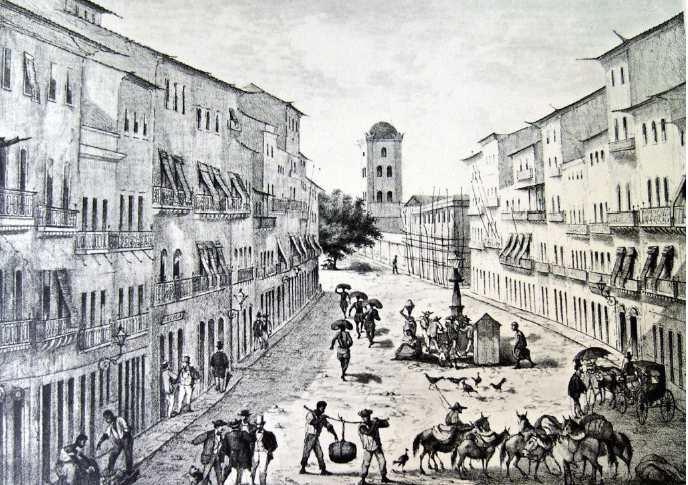
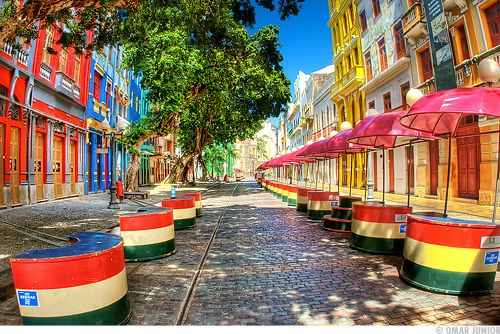

Conheça a Rua do Bom Jesus
A Rua do Bom Jesus é uma das vias mais históricas e emblemáticas do Recife Antigo. Situada no coração do
centro histórico da cidade, ela tem grande importância cultural e arquitetônica, sendo um ponto de interesse
tanto para turistas quanto para os moradores locais.

A História da Rua do Bom Jesus
A rua foi um dos primeiros espaços urbanos a serem estruturados após a fundação do Recife, com uma arquitetura que remonta ao período colonial. Originalmente, a área era predominantemente residencial e comercial, e ao longo dos séculos, a rua foi palco de importantes eventos históricos da cidade. Ela é particularmente significativa por abrigar a Sinagoga Kahal Zur Israel, considerada a primeira sinagoga das Américas, construída em 1636. O nome "Bom Jesus" faz referência a uma das figuras centrais do cristianismo, mas a rua também tem uma forte conexão com a comunidade judaica que vivia em Recife durante o período holandês no Brasil. A Rua do Bom Jesus Hoje
Hoje, a Rua do Bom Jesus é um local de intensa movimentação cultural e turística. Embora ainda preserve sua característica histórica, ela também se modernizou ao longo do tempo, recebendo investimentos em infraestrutura e conservação. O local é conhecido por sua atmosfera tranquila e charmosa, onde é possível passear e apreciar tanto a arquitetura quanto a arte local. Importância Cultural
A Rua do Bom Jesus é, sem dúvida, um dos marcos históricos mais importantes de Recife, representando a diversidade cultural e religiosa da cidade. Sua conexão com a comunidade judaica é um dos aspectos que torna a rua única, e sua localização no coração do Recife Antigo a torna uma rota de exploração para quem deseja entender melhor a história e as tradições de Pernambuco.